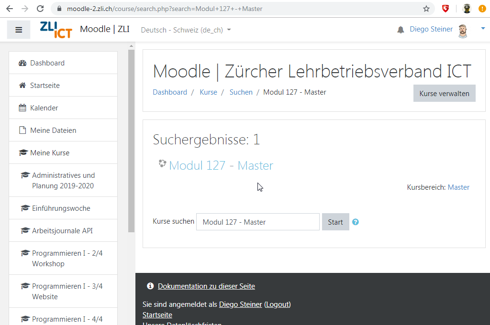
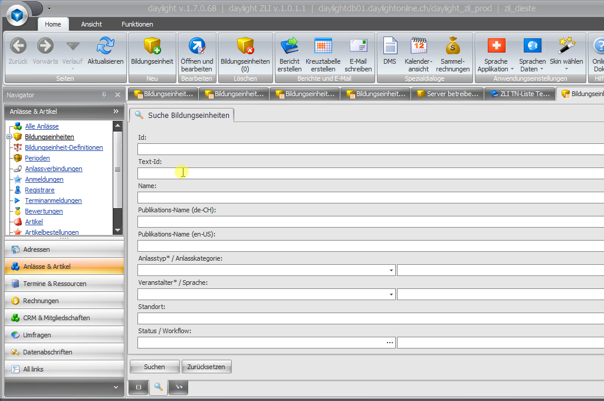
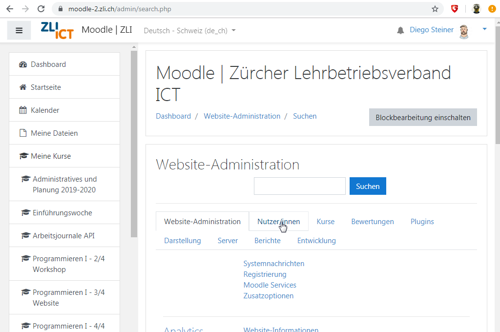
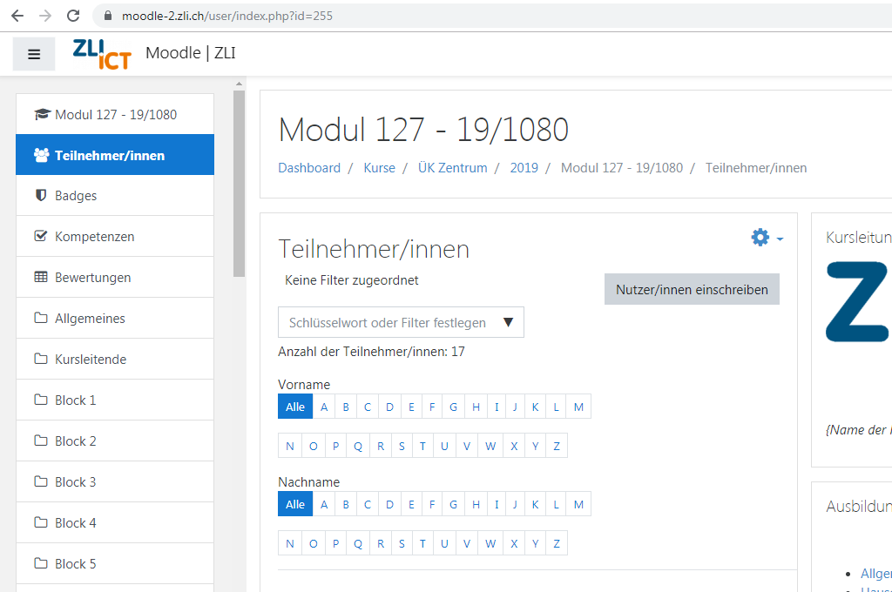

Kurs in Moodle erstellen
- Master-Kurs auf Moodle "sichern" und dann
als neuen Kurs "wiederherstellen"
- Wenn der Master-Kurs vor weniger als 1 Monat bereits gesichert wurde, kann der Kurs auch direkt
wiederhergestellt werden
- Der Kurs wird nach dem Schema "Modul [NR] - [ANLASS_NR]" benannt und im passenden Kursbereich abgelegt,
z.B. "ÜK Zentrum / 2019"

Teilnehmer aus Daylight exportieren
- Die Teilnehmenden können aus Daylight mit dem Bericht "ZLI TN-Liste Technik Moodle" exportiert werden
- Bei den Einstellungen muss darauf geachtet werden, dass als Zeichensatz "utf-8" verwendet wird

Teilnehmer in Moodle importieren
- Über die Webseiten-Administration kann eine Nutzerliste hochgeladen werden
- Bei den Einstellungen muss darauf geachtet werden, dass als als CSV-Trennzeichen das ";" ausgewählt wird
und als Encoding "utf-8" verwendet wird
- Nach der Import muss nach Abschluss auf Fehler kontrolliert werden.

Kursleitung zu Kurs hinzufügen
- Auf der Teilnehmer/innen Seite des neu erstellten Kurses muss die Kursleitung manuell hinuzgefügt werden
- Hier kann auch kontrolliert werden, ob die Teilnehmenden korrekt dem Kurs zugeordnet wurden

Kursleitung informieren
- Anschliessend sollte die Kursleitung noch darüber informiert werden, wo der Kurs zu finden ist und wie das
Standardpasswort lautet